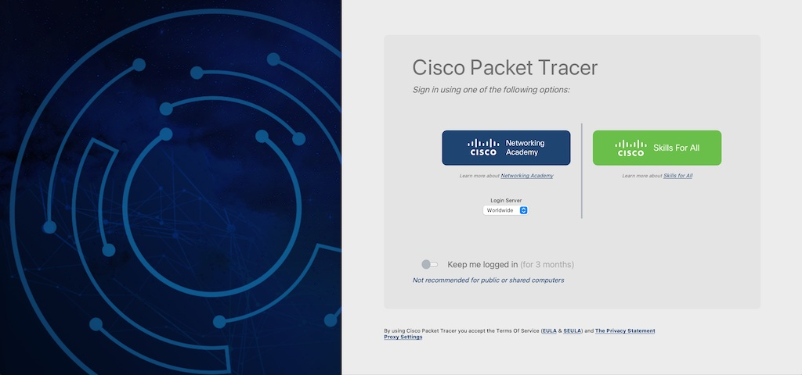
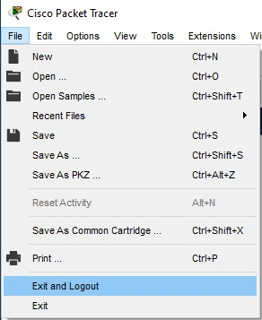
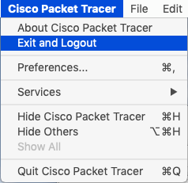

Log In
Cisco Packet Tracer requires user authentication.
A NetAcad or a SkillsForAll account is required to sign in when you launch Cisco Packet Tracer.

Creating an Account
If you do not have an account, Please ask your instructor for an account or enroll in one of the free Packet Tracer Courses available on the following Cisco Networking Academy official websites:
These introductory courses are a great place to explore how Cisco Packet Tracer can help you learn networking, cybersecurity, and IoT, and gain hands-on simulation practice. By getting a NetAcad ID or a SkillsforAll.com ID, you will also be able to take other courses available for free.
Keep me logged in
The “Keep me logged in” feature was designed to give you access (for 3 months) to Cisco Packet Tracer without needing to re-enter your credentials each time. Using the “Keep me logged in” feature is only recommended for private computers.
If you are using a public or shared computer, you should NOT use the “Keep me logged in” option or you should ensure that you Logout before closing Cisco Packet Tracer to prevent other users of the computer gaining access using your credentials
Log Out
It is easy to log out of an account through the File menu.

